Un Samsung® Galaxy® Tab Active2 diventa il monitor-defibrillatore che i partecipanti usano davvero. Un secondo tablet diventa la tua regia: conduci lo scenario e raccogli i fatti per il debriefing.
Solo per la simulazione sanitaria: non è un dispositivo medico, non misura e non eroga nulla.
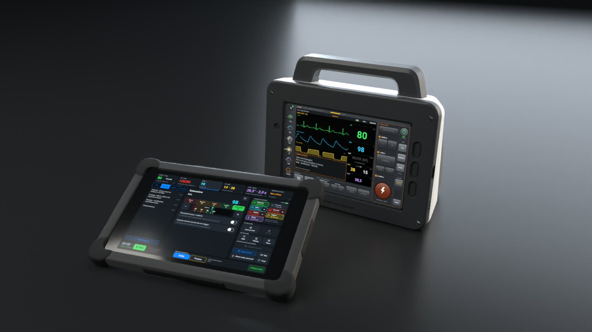
Alzi la frequenza, abbassi la pressione, cambi il ritmo: in sala il monitor si trasforma sotto gli occhi dei partecipanti, con gradualità o di colpo.
È il tablet che vedono e toccano i partecipanti. La NIBP si gonfia e misura, gli allarmi suonano con la loro priorità, in arresto la saturazione sparisce e l'EtCO₂ racconta la qualità della RCP. Il defibrillatore carica, scarica, sincronizza e fa pacing.
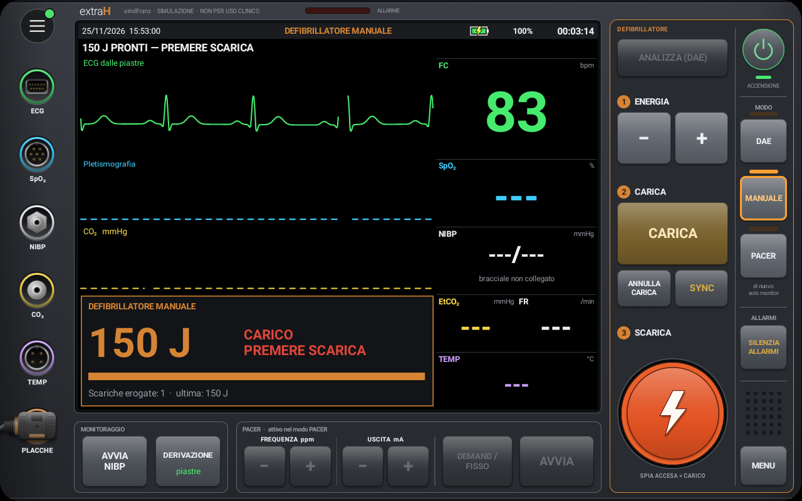
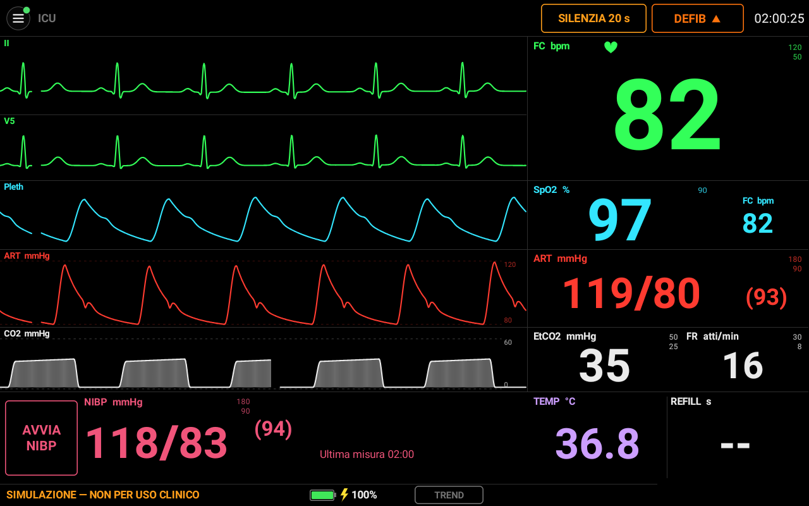
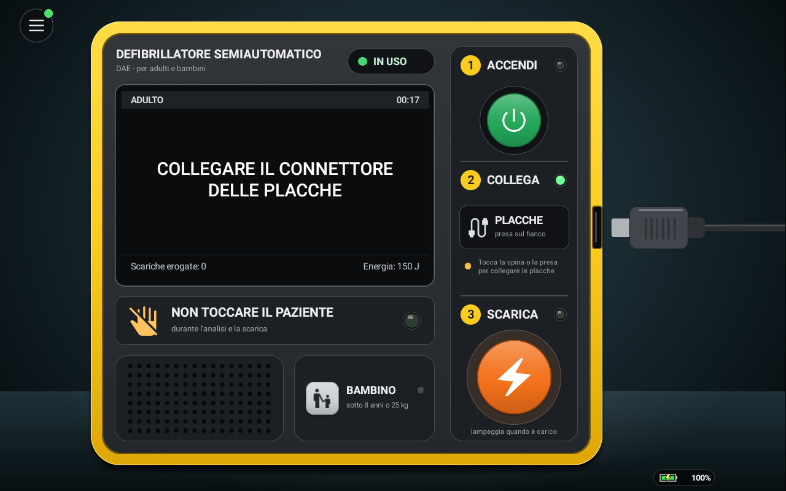
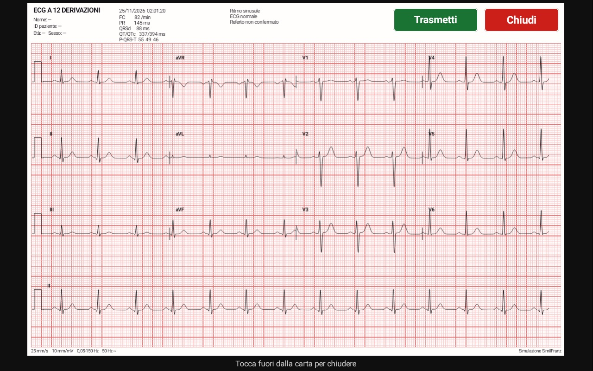
Tre layout originali, disegnati per questo progetto. La categoria Personalizzati aspetta i frontali che crei tu per il tuo centro: la guida ti accompagna passo per passo.
I tre tasti fisici del tablet diventano ACCENSIONE, CARICA e SCARICA su tutti i layout, e animano quelli a schermo.
A ogni scarica lo scatto dei relè e una vibrazione decisa; nel pacing una vibrazione lieve a ogni impulso.
Per la Home servono tre pressioni; schermo e volume si comandano dal menu, a sportello chiuso.
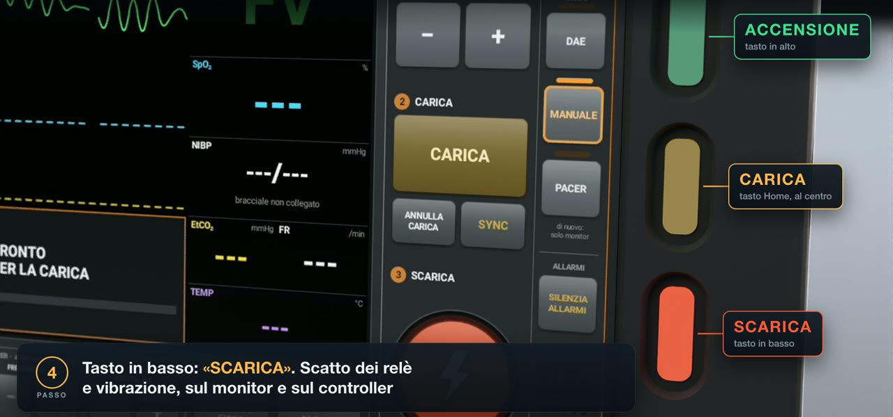
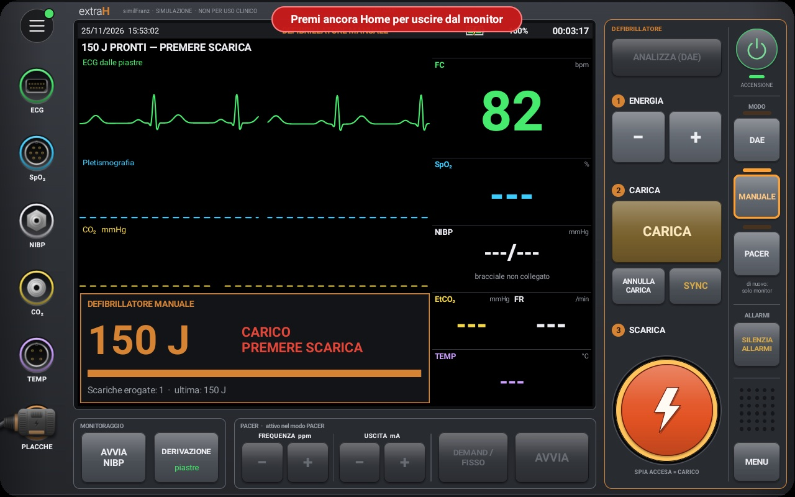
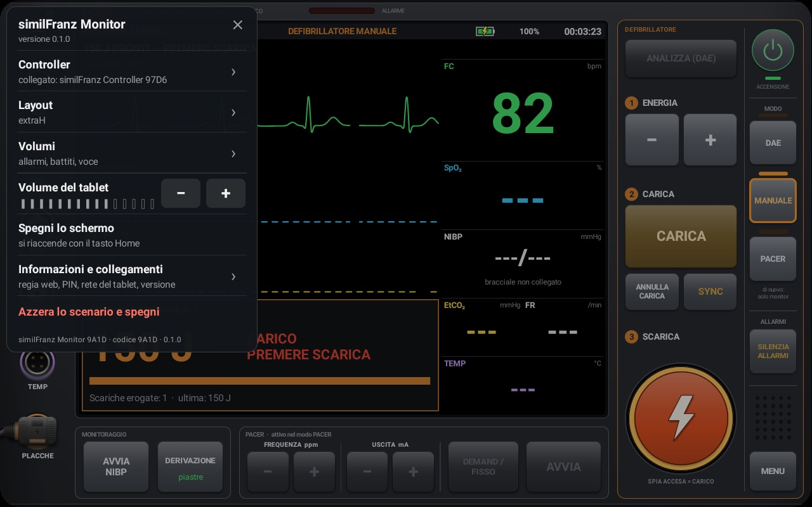
Il secondo tablet è il tuo. In alto i valori veri del paziente, sotto tutto quello che serve per guidare lo scenario. Lo usi in piedi, con una mano, anche con i guanti, mentre lo sguardo resta sul gruppo.
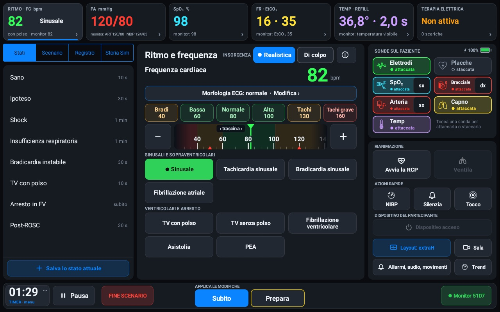
Wi-Fi Direct® fra i due tablet: scegli il monitor, scrivi il PIN, sei in scenario. In palestra, in ambulanza, in un prato.
Tocchi una tessera e regoli il valore. Con «Prepara» cambi più parametri e li fai partire insieme.
Vedi applicare elettrodi, saturimetro, bracciale o piastre? Un tocco, e il monitor li legge.
Le fasi le prepari prima; in sala passi alla successiva quando decidi tu, con la tua nota.
Qualità delle compressioni e stanchezza di chi comprime; dopo ogni scarica scegli tu che cosa succede.
Alzi o abbassi il monitor senza entrare in sala; a ogni scarica il controller vibra.
Quando i partecipanti trasmettono l'ECG a 12 derivazioni, rispondi tu come centrale: la risposta compare sul monitor.
Il monitor serve da sé la regia web: computer e tablet sulla stessa rete Wi-Fi®, scrivi l'indirizzo che il monitor ti mostra e il PIN. Nessuna installazione.
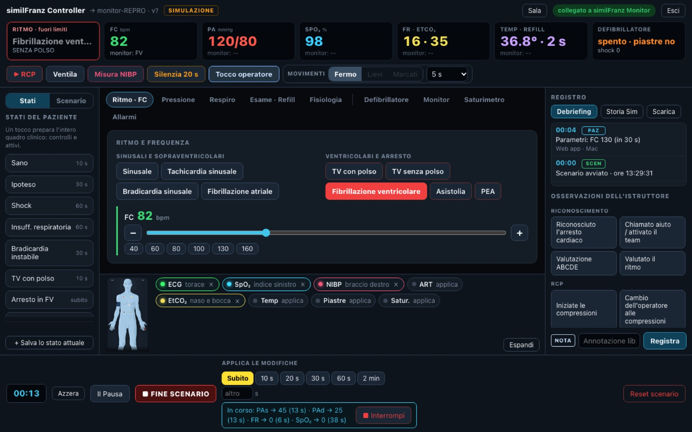
Uno conduce dal tablet, l'altro osserva e annota dal computer.
Fotocamera e microfono del monitor arrivano a chi ha il comando. Nessun server esterno.
Sul monitor resta la scritta «● IN DIRETTA» finché la Sala è aperta.
Prima di usare la Sala informa i partecipanti nella familiarizzazione e raccogli il loro consenso, secondo il GDPR e le regole della tua struttura. Guida alla regia web
Dieci capitoli, controller e monitor affiancati, dal primo collegamento al debriefing. A ogni capitolo una pausa «prova tu».
Quello che fanno i partecipanti si annota da solo; quello che osservi tu lo aggiungi con un tocco. La simulazione si salva nella Storia Sim, con il verbale in PDF.
Presenti il dispositivo al gruppo: come si accende, dove si collegano le sonde, che cosa può fare.
Il monitor risponde alle azioni come nella pratica clinica; tu tieni lo scenario sugli obiettivi.
«Dall'arresto al riconoscimento sono passati sette secondi: che cosa ve l'ha fatto capire?»
Dietro le curve lavora un modello che lega ritmo, circolo e respiro. L'ultima parola resta tua: ogni valore si corregge a mano, in qualsiasi momento.
Segue la qualità della RCP e la stanchezza di chi comprime; al ROSC arriva il picco.
Con la pressione che scende l'onda si rimpicciolisce, poi «bassa perfusione» e «segnale debole».
In apnea la CO₂ si accumula e la saturazione cala; con il tubo in esofago le insufflazioni restano piatte.
Dopo una scarica efficace una pausa elettrica e complessi che accelerano.
Sopra soglia ogni spike cattura; con contatto scarso delle piastre la cattura si perde.
Voce guida, movimento rilevato, priorità degli allarmi, pausa audio interrotta da un allarme letale.
Il modello è semplificato e orientato alla plausibilità clinica dei segnali, pensato per la formazione: non è un simulatore fisiologico quantitativo.
Una revisione simulata con l'intelligenza artificiale, non il parere di professionisti reali: con Claude Code ogni agente ha ricevuto il ruolo di uno specialista; l'autore ha guidato il lavoro, scelto le correzioni e verificato ognuna sul tablet.
Revisioni condotte con Claude Code (Claude™ è un marchio di Anthropic, PBC): simulate dall'intelligenza artificiale, guidate e verificate dall'autore; non sostituiscono la valutazione di professionisti reali né uno studio di validazione. Metodo, revisori e correzioni
Il Galaxy® Tab Active2 è un tablet rugged del 2017, robusto, con batteria sostituibile. Nel guscio stampato in 3D diventa un monitor da appoggiare in sala: maniglia incassata, schermo inclinato, borsa per bracciale, elettrodi e saturimetro.
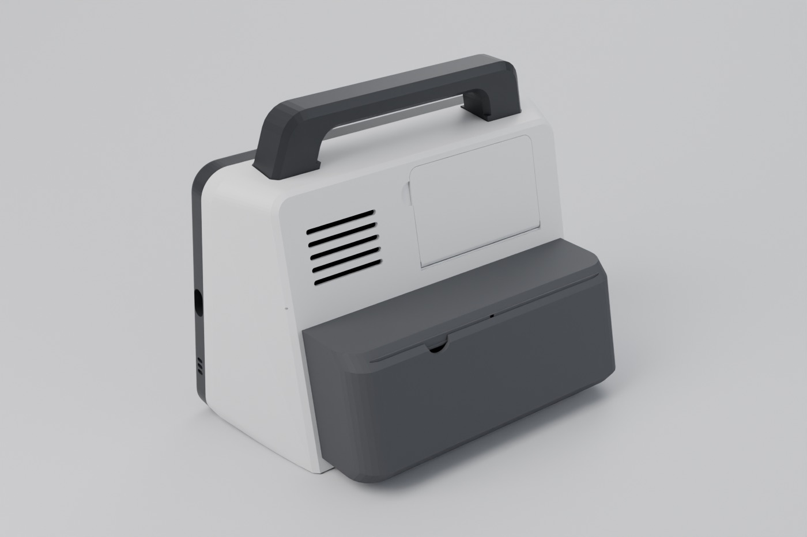
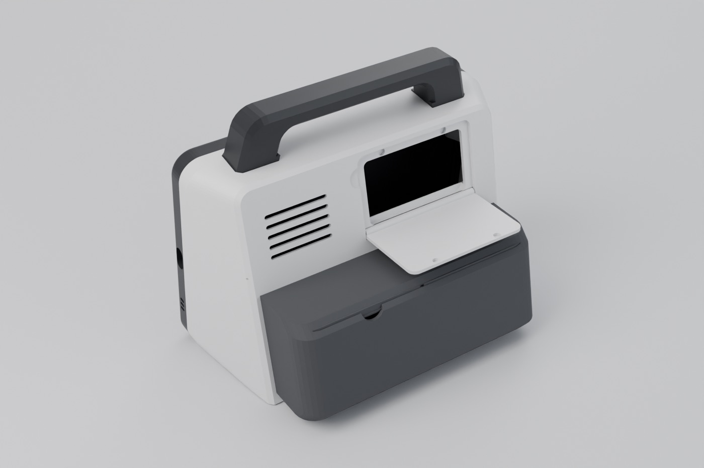
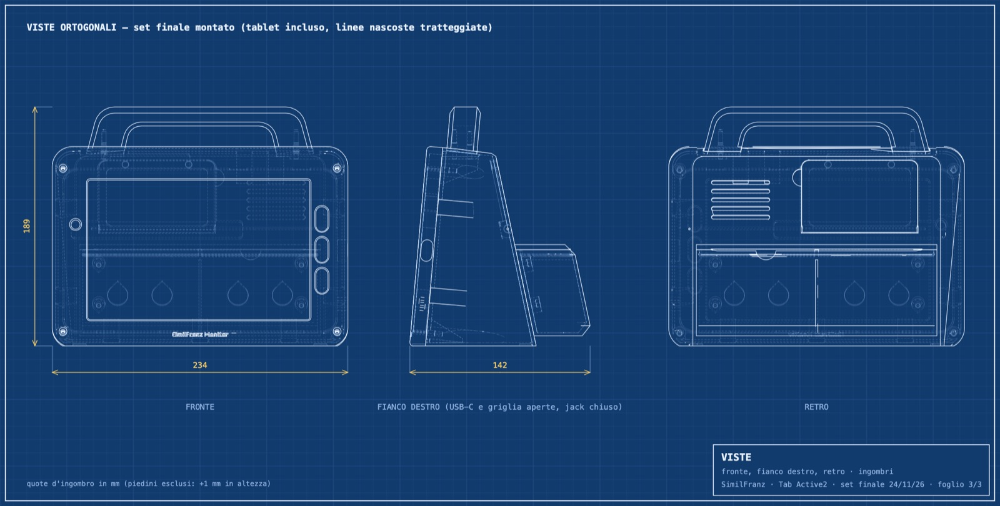
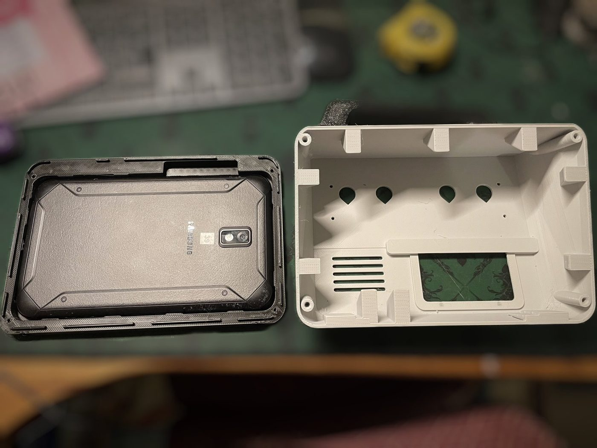
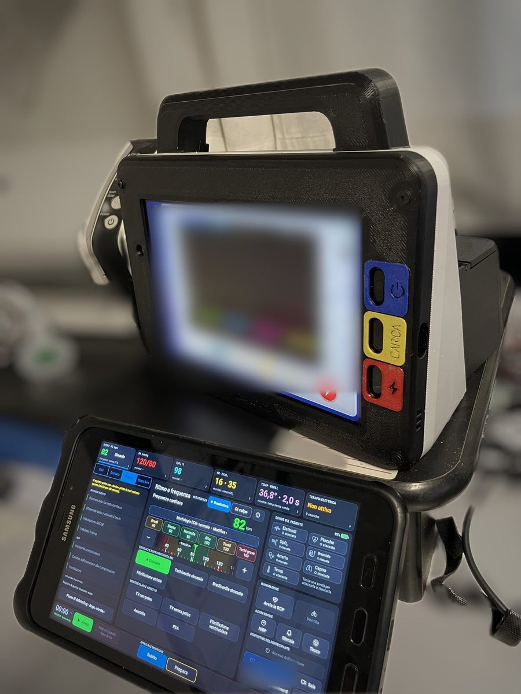
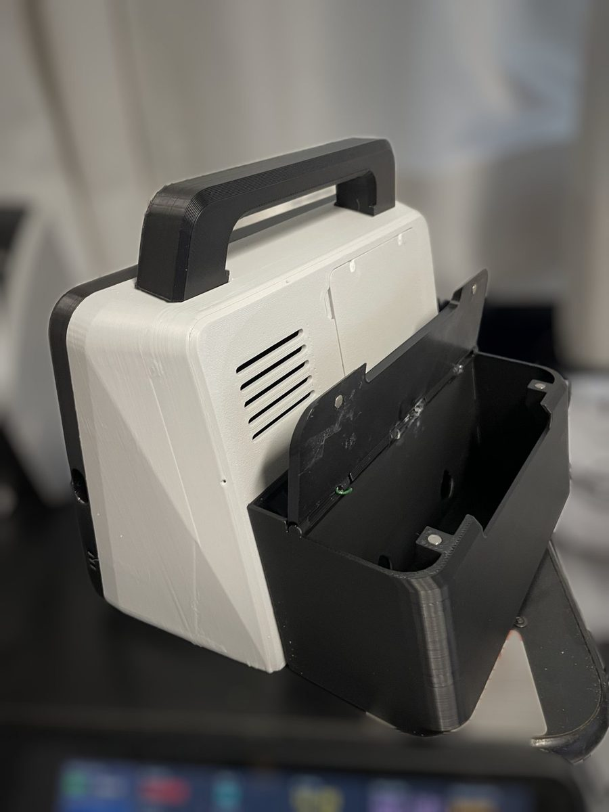
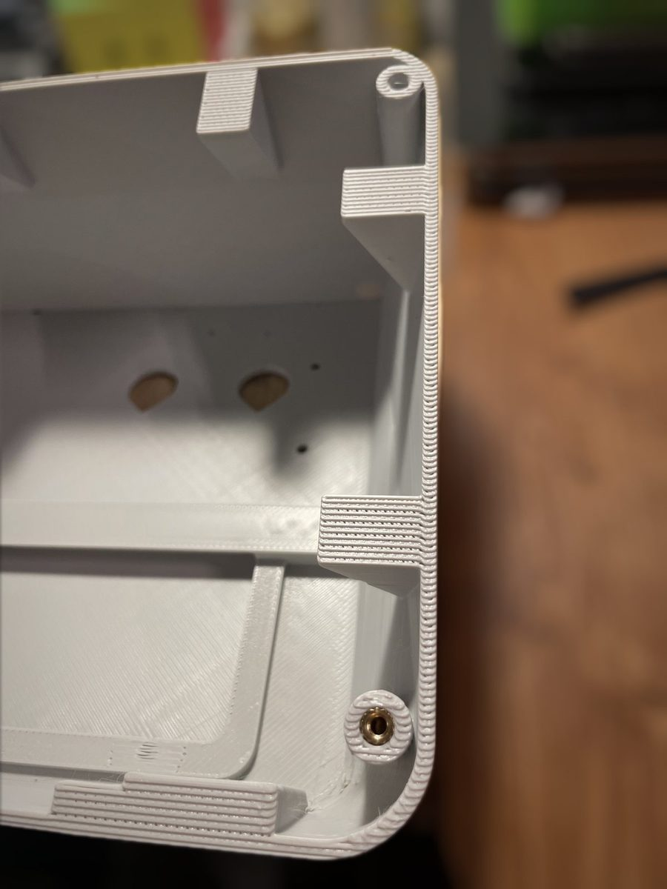
Guscio e tablet simulati con il loro peso reale su una pedana inclinabile, come nella prova della norma IEC 60601-1.
Nessuna compenetrazione fra i pezzi; inserti a caldo presi per intero, tasti e USB-C raggiungibili.
Ogni STL è un pezzo chiuso, già orientato per la stampa.
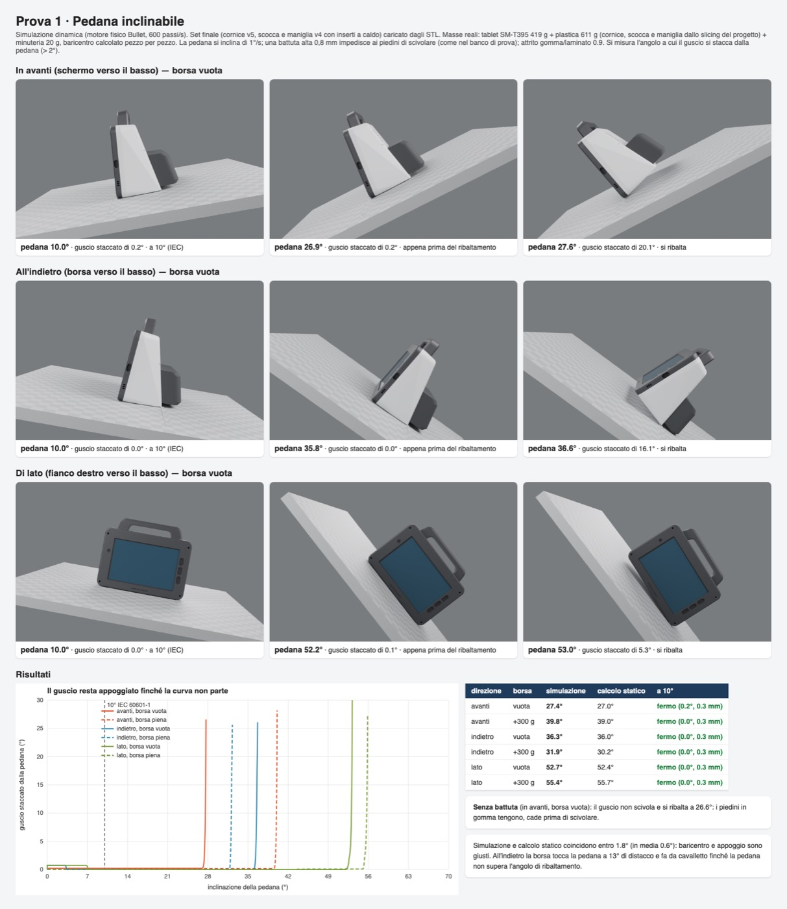
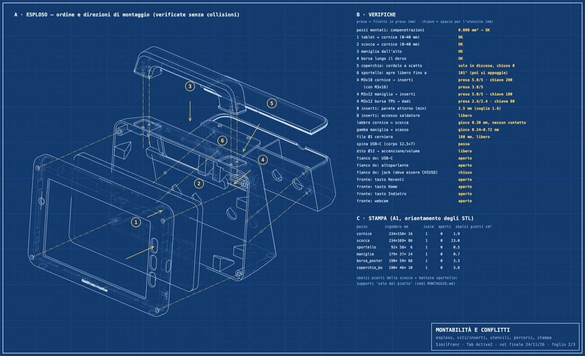
Il guscio è stato stampato e montato; le prove di stabilità e montabilità qui sopra sono simulazioni al computer e non una certificazione. I file da stampare · il montaggio passo per passo · le verifiche · stampata, in prova d'uso: la tasca a due vani
Quello che serve il giorno del corso. I dettagli nella guida all'uso; un esempio completo nel caso d'uso: arresto in FV sul territorio.
Un Galaxy® Tab Active2 per il monitor e un secondo tablet per la regia. Tutto funziona offline, senza account e senza abbonamenti.
similFranz è nato con un saturimetro su iPod touch® 4 ed è cresciuto con il monitor su iPad mini®: questa è la sua versione Android. Tutto l'ecosistema sulla pagina similFranz, per formatori, istruttori e facilitatori di simulazione.